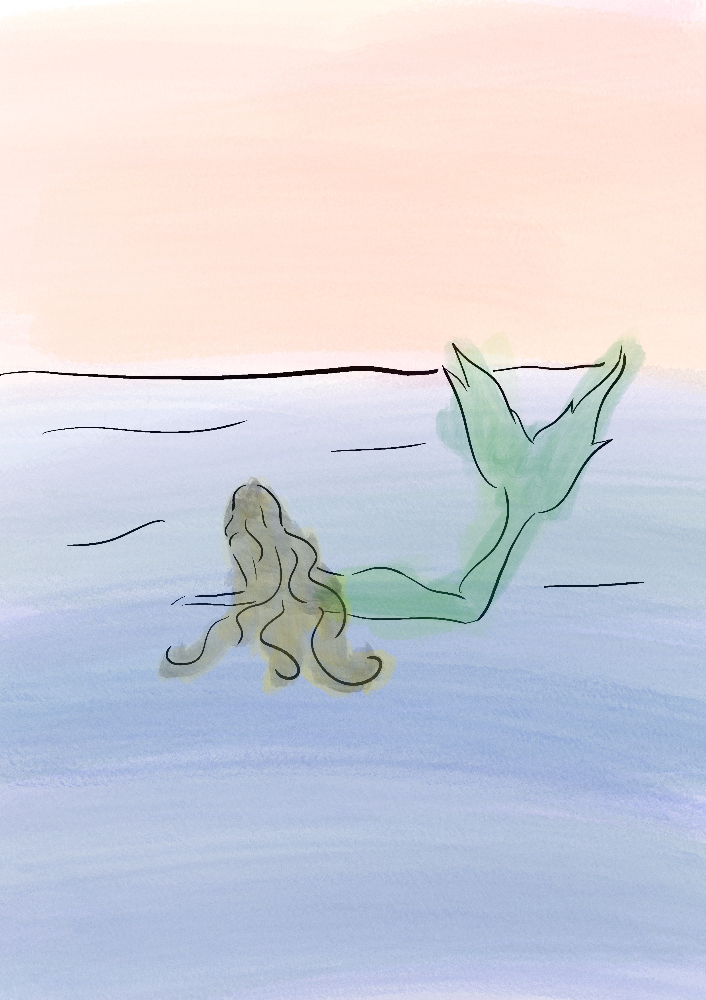

Iara: a sereia brasileira
Venha conhecer tudo sobre a Iara!
A Iara é uma das figuras mais fascinantes e misteriosas do folclore brasileiro. Combinando a beleza encantadora de uma sereia com os mistérios das águas amazônicas, ela é protagonista de lendas que atravessam gerações.
Sua história mistura beleza, perigo e mistério, refletindo temas como o poder da sedução, os riscos da curiosidade e a força da natureza. Mais do que uma simples personagem mítica, Iara simboliza a relação profunda entre o ser humano e os encantos ocultos do mundo natural.

Imagem autoral criada para aula DSG1863